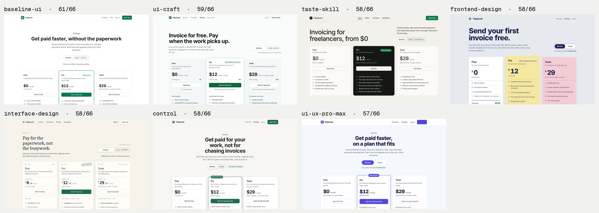
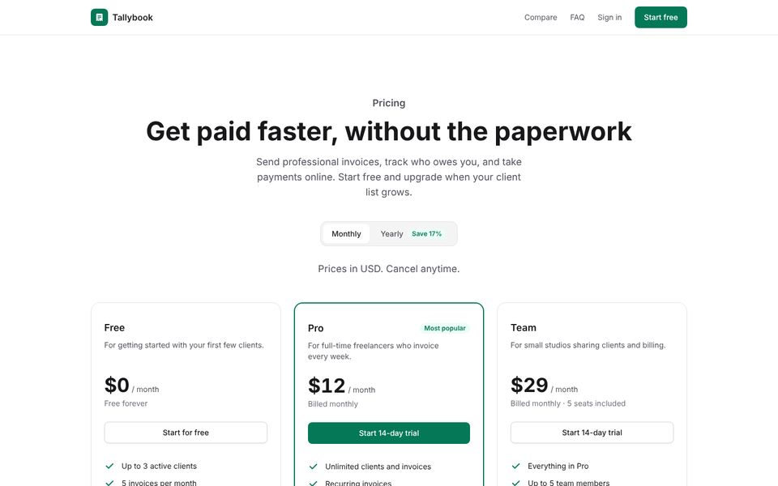
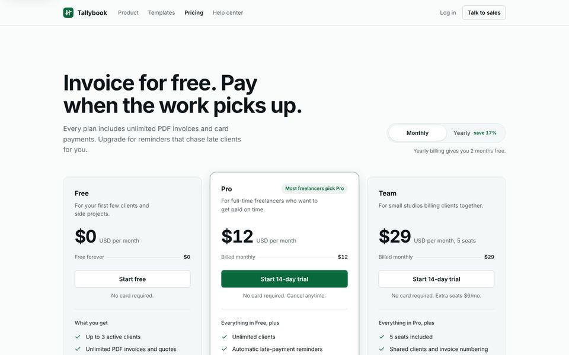
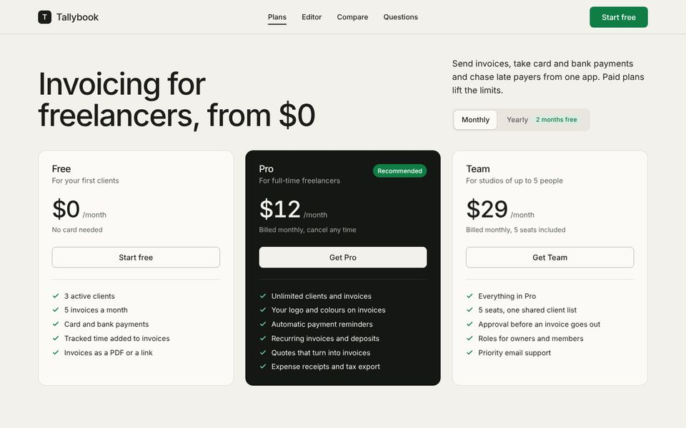
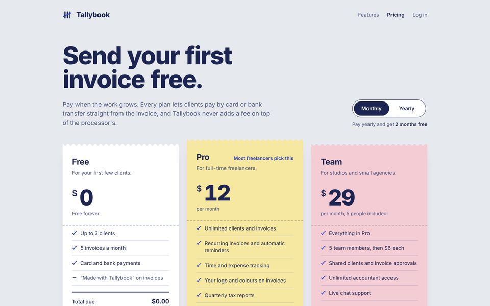
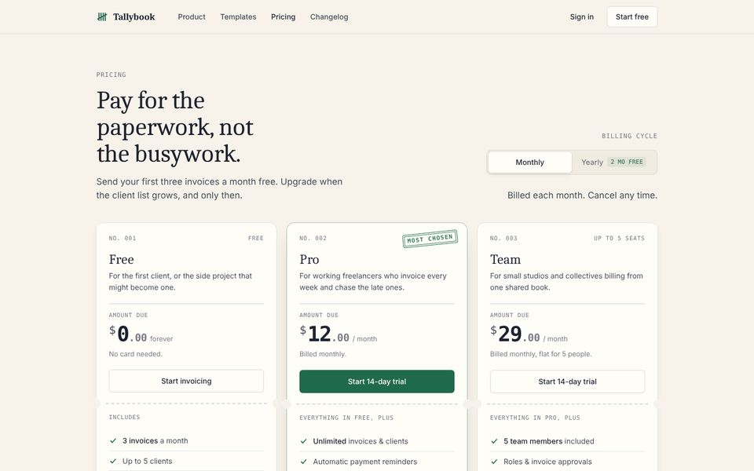
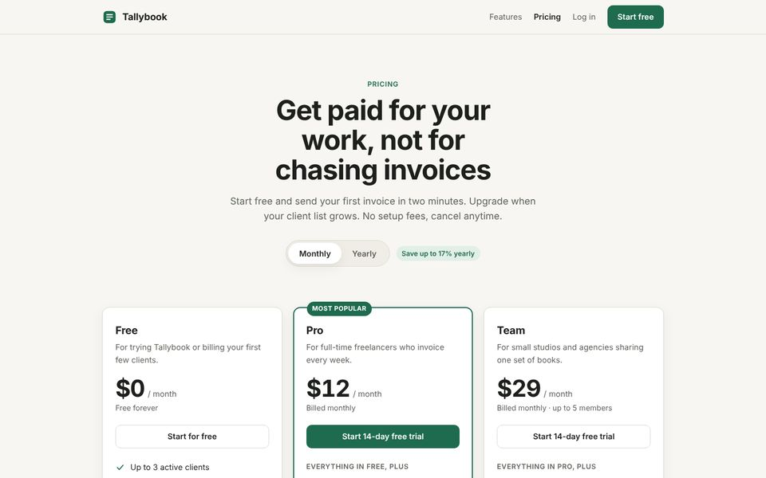
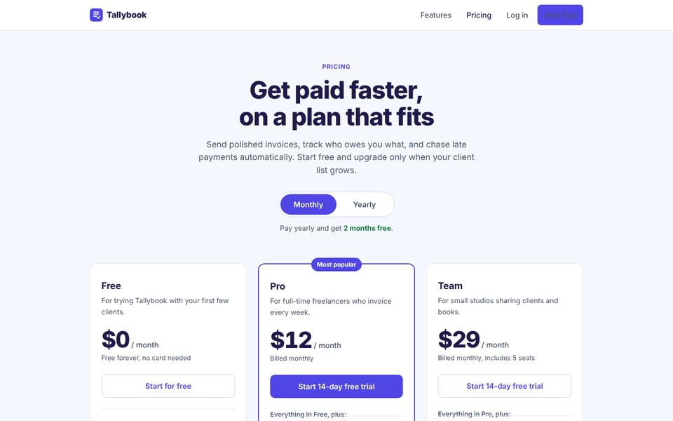

State of AI-made UI: November 2026
We gave one brief to six popular public design skills running in Claude Code, three runs each, and measured all 21 pages with the same 66 browser checks. No page passed all 66. The best skill’s median was 61; the same model with no skill scored 58.

Who measured this. UI/UX Pass ran the test and wrote the checks. We also sell Claude skills for design review, so our own skills are not in the table. Everything needed to repeat the test is in the download.
Results
Checks passed out of 66, median of 3 runs. Ties are ordered by fewer release-blocking failures, then the best run. *Median wall-clock time; up to 7 runs ran at once.
| # | Skill and version | Median /66 | Runs | Blocking fails | Build time* |
|---|---|---|---|---|---|
| 1 | baseline-ui ibelick/ui-skills | 61 | 61 · 61 · 60 | 2 | 1.7 min |
| 2 | ui-craft educlopez/ui-craft | 59 | 58 · 59 · 61 | 1 | 4.7 min |
| 3 | taste-skill Leonxlnx/taste-skill | 58 | 58 · 58 · 60 | 1 | 7.6 min |
| 4 | frontend-design anthropics/skills | 58 | 59 · 57 · 58 | 1 | 2.8 min |
| 5 | interface-design Dammyjay93/interface-design | 58 | 58 · 57 · 59 | 2 | 3.0 min |
| — | No skill (control) | 58 | 58 · 58 · 58 | 2 | 1.7 min |
| 6 | ui-ux-pro-max nextlevelbuilder/ui-ux-pro-max-skill | 57 | 57 · 59 · 57 | 2 | 2.1 min |
How to read it. The spread is narrow: 57 to 61. With three runs per skill, a gap of one or two checks is within run-to-run noise (ui-craft ranged 58–61 by itself). The clear signals are what every skill got wrong, below, and that only one skill beat the no-skill control by more than one check.
The five mistakes almost every page made
- Tap targets under 44 px on a phone20 of 21 pages: logo links 26–32 px tall, text nav links 20–24 px, buttons 36–40 px
- Links that go nowhere (href="#")18 of 21 pages: logo, Sign in, footer links
- Text under 4.5 : 1 contrast10 of 21 pages: muted labels at 3.6–3.9 : 1, primary buttons as low as 2.0 : 1
- Prices and table numbers without tabular figures12 of 21 pages: columns of numbers that don’t line up
- The comparison table overflows at 390 px7 of 21 pages: tables 637–661 px wide on a 390 px screen
Also on all 21: hover styles not limited to devices that can hover (minor). All 21 also lack a product image in the first screen, but the brief asked for no external images, so we do not count that against anyone.
What they built







Method
Brief, word for word: “Build a pricing page for a SaaS product called Tallybook, an invoicing tool for freelancers. Include three plans (Free, Pro at $12 per month, Team at $29 per month), a monthly/yearly billing toggle, a feature comparison table and an FAQ. Output one self-contained file named index.html in the current folder: inline CSS and JS, no build step, no external images.”
Skill runs began with “Use the [skill] skill (and no other skill).” The control began with “Do not use any skill.” Every skill transcript shows the skill being loaded.
Setup
- 24 November 2026, 07:53–08:06 UTC
- Claude Code 2.1.331, headless, model claude-opus-5-5
- One clean folder per run with only that skill installed; no web access
- 3 runs × 7 groups = 21 pages; score is the median
- 66 checks in Chromium at 1440 × 900 and 390 × 844, plus 8 template signs
One correction
On 3 pages the only contrast failure was the selected “Monthly” toggle label, reported near 1 : 1. It is white text on a dark pill that the checker could not see behind it. We confirmed it by eye and by sampling pixels, and counted that check as a pass. Raw and corrected scores are both in the data.